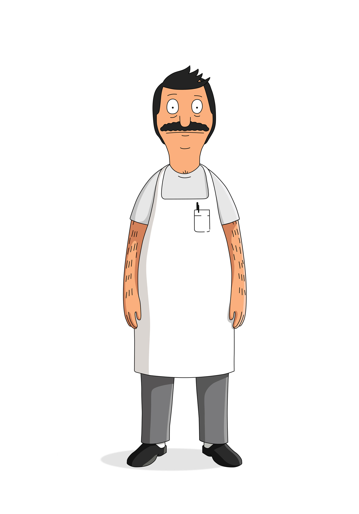
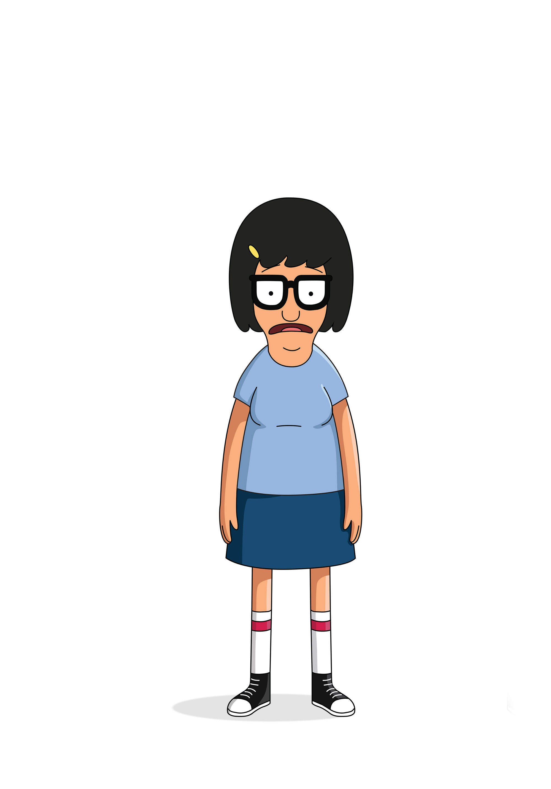
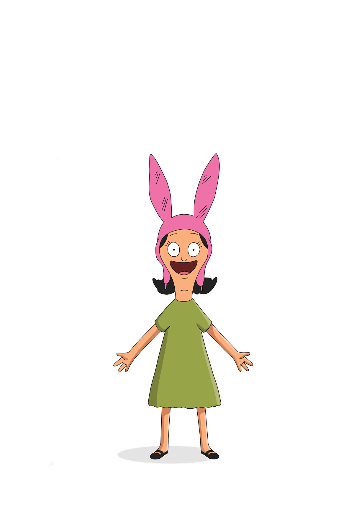

Robert "Bob" Belcher, Jr.
Bob is the chef, owner, and operator of Bob's Burgers. He spent his childhood working for his father, Big Bob, at Big Bob's Diner. Now in his 40's, Bob spends his days in the restaurant with his wife, Linda. Their three children help around the restaurant after school and on the weekends.
Linda Belcher
The incredibly supportive Linda met and married her "Bobby" in the 90's and has been by his side ever since. Fun, friendly, eccentric, and outgoing, Linda will do anything for her family and friends. She can be found manning the grill, taking orders, and joking with anybody and everybody that comes through their doors! If you find her in the back alley talking to the raccoons, don't freak out! She loves and appreciated the hierarchy of their complex lives.

Tina Belcher
Oh, Tina. The eldest of the Belcher children, Tina has the most responsibility around the restaurant when compared to her siblings. She assist in taking orders and cleaning the counters, as well as occasionally working the grill. If you come across Tina giving off a blank stare and muttering incoherantly, we apologize and please find the nearest Belcher to assist you!
Gene Belcher
We apologize for Gene. He can typically be found in one of the restaurant's booths playing music and sound effects from his Casio SK-5 keyboard. He maintains a very close relationship with his parents and sisters.

Louise Belcher
Louise Belcher is the youngest of the three children. Extremely smart and mischievous, she doesn't help around much because she's can be somewhat of a liability. Despite this, she shows a deep connection to her dad, Bob, and expresses interest in taking up the spatula when the time comes.